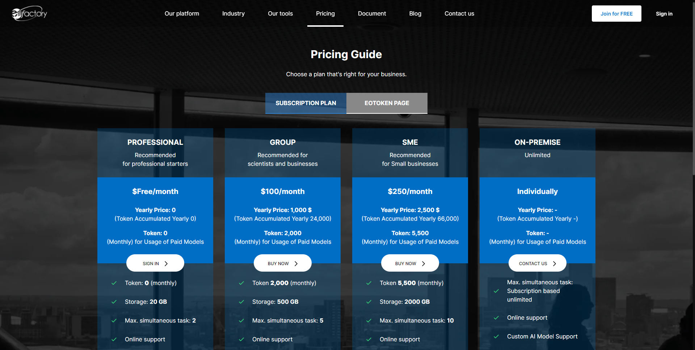

Welcome to EOfactory’s documentation!
Brief description
This section provides an introduction and overview to the EO factory- Earth Observation Factory. EO factory is where you display and explore GIS dataset for your study area by using the latest advancement in artificial intelligence, where you detect objects such as buildings, roads, ships, trees and so on. EO factory is also the application you use to train your own model in your own image. Moreover, EO factory provides the analyzing toolkit for your image or vector file. EO factory is a free platform for extracting crucial features from satellite images or even drone images quickly and simply
Get Start
Open the web browser and type https://eofactory.ai in the URL address bar and press enter. On entering the correct URL, below the landing page will appear.
You want buy eofactory’s package to use: click tab Pricing on menu:
If you want to experience, you can use free package (Professional) by register an account. Each package has information: object, price, benifit.
Click on JOIN FOR FREE, the registration page will appear.
The user can create a new account by filling up the Sign up from before clicking on “Register Account” then “login” with email and password or easier using “Sign up with google” with Google’s account
After that, the dashboard appears to guide new users to introduce workspace in EOF and create the first workspace.
The first page of EO Factory is about the workspace; users can store and manage the workspace following each project. Here, users can share workspace with another, edit or delete workspace. The top shows the four most recent workspaces. Below is a list of all workspaces included yours and shared workspaces
Click icon and select action:
Users can search workspace by name or tag (with # at the beginning of the tag)
Select the workspace which you want to work with. Then the dashboard appears:
You can easily search image, vector, model, dataset, result by name:
or search detail by click Show more link:
At the left bar you can navigate to different dashboard views such as.